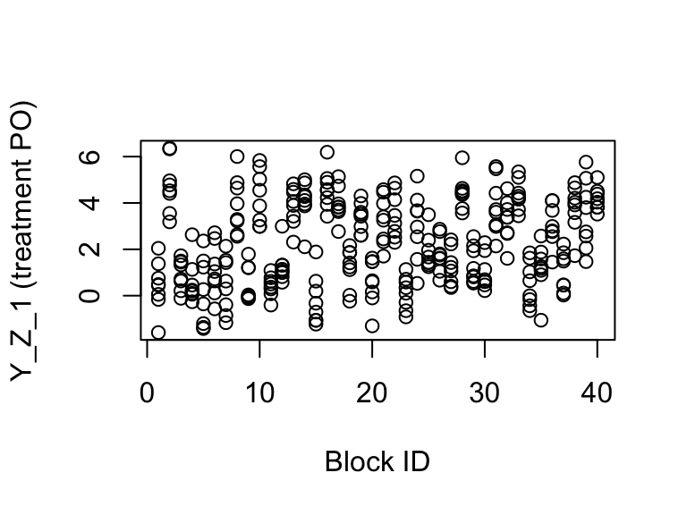
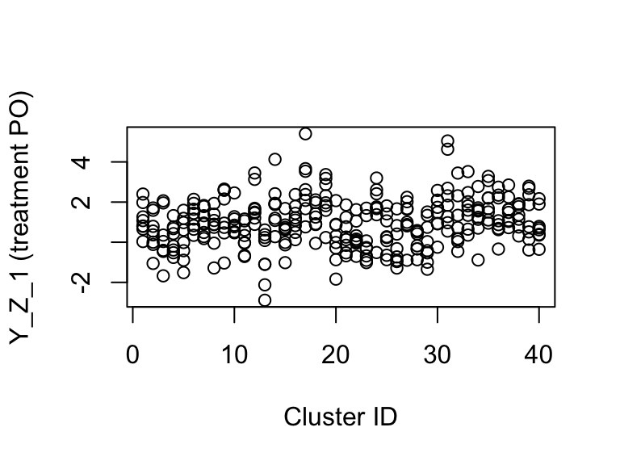

This document shows how providing estimatr with the appropriate blocks and clusters that define a research design can eliminate bias when estimating treatment effects using difference_in_means(). More details about the estimators with references can be found in the mathematical notes.
I am going to skip simple difference-in-means, and just straight to the case with blocks. Throughout I will use DeclareDesign to help diagnose the properties of the various estimators.
library(DeclareDesign)## Loading required package: randomizr## Loading required package: fabricatr## Loading required package: estimatrBlocking is a common strategy in experimental design used to improve the efficiency of estimators by ensuring that units with similar potential outcomes, when blocked, will be represented in both treatment conditions.
Let’s first consider an example where blocks predict the potential outcomes but where the probability of treatment is constant across blocks. In this case, estimating a simple difference-in-means without passing the information about the blocks will not bias the estimate, but it will not take advantage of the increased efficiency blocking provides and the standard errors will be unnecessarily large. Let’s see that in an example.
First, let’s set up our data and randomization scheme. In all of these analyses, our estimand will be the average treatment effect
# Define population with blocks of the same size, with some block-level shock
simp_blocks <- declare_population(
blocks = add_level(
N = 40,
block_shock = runif(N, 0, 10)
),
individual = add_level(
N = 8,
epsilon = rnorm(N)
)
)
# Block shocks influnce Y_Z_1, the treatment potential outcome
blocked_pos <- declare_potential_outcomes(Y ~ Z * 0.5 * block_shock + epsilon)
# Complete random assignment of half of units in each block
blocked_assign <- declare_assignment(blocks = blocks, prob = 0.5)
# Estimand is the ATE
ate <- declare_estimand(ATE = mean(Y_Z_1 - Y_Z_0))Now let’s define our two estimators, one that doesn’t account for blocking and one that does. The estimator that accounts for blocking essentially will compute treatment effects within blocks and then will take a weighted average across blocks. Details and references can be found in the mathematical notes.
dim <- declare_estimator(Y ~ Z, label = "DIM")
dim_bl <- declare_estimator(Y ~ Z, blocks = blocks, label = "DIM blocked")
# Our design
simp_bl_des <- declare_design(
simp_blocks,
blocked_pos,
blocked_assign,
ate,
dim,
dim_bl
)
# Our diagnosands of interest
my_diagnosands <- declare_diagnosands(
`Bias` = mean(est - estimand),
`Coverage` = mean(estimand <= ci_upper & estimand >= ci_lower),
`Mean of Estimated ATE` = mean(est),
`Mean of True ATE (Estimand)` = mean(estimand),
`Mean Standard Error` = mean(se)
)Let’s get a sample dataset to show the relationship between treatment potential outcomes and blocks.
dat <- draw_data(simp_bl_des)
plot(dat$blocks, dat$Y_Z_1,
ylab = "Y_Z_1 (treatment PO)", xlab = "Block ID")
As you can see, the blocks tend to have clustered treatment potential outcomes. Now let’s compare the performance of the two estimators using our diagnosands of interest.
set.seed(42)
simp_bl_dig <- diagnose_design(
simp_bl_des,
sims = 5000,
diagnosands = my_diagnosands
)| Naive DIM | Block DIM | |
|---|---|---|
| Mean of True ATE (Estimand) | 2.506 | 2.506 |
| Mean of Estimated ATE | 2.505 | 2.505 |
| Bias | 0.000 | 0.000 |
| se(Bias) | 0.002 | 0.002 |
| Coverage | 0.995 | 0.949 |
| se(Coverage) | 0.001 | 0.003 |
| Mean Standard Error | 0.159 | 0.112 |
| se(Mean Standard Error) | 0.000 | 0.000 |
Both estimates are unbiased (and indeed are identical), and you can see that standard errors when accounting for blocking are much smaller (leading to better coverage and more efficient estimation). Note that the "se" rows in the table describe the uncertainty arising from the simulation and can help us know well we estimated our bias and variance using the simulation approach.
Another common design involves clustered treatment assignment, where units are can only be treated in groups. This often arises when treatments only can happen at the classroom, village, or some other aggregated level, but you can observe outcomes at a lower level, such as a student in a classroom or a voter in a village.
With clustered designs, the naive difference-in-means estimate of the ATE will be unbiased. However, if the potential outcomes are correlated with cluster, than the naive standard error will underestimate the standard error. This is because the sampling variability of the estimated ATE is greater when certain clusters with similar potential outcomes will be in the same treatment status across runs. If you pass clusters to our difference-in-means estimator, we properly account for this increase in the sampling variability.
Let’s see this in action.
# Define clustered data
simp_clusts <- declare_population(
clusters = add_level(
N = 40,
clust_shock = runif(N, 0, 10)
),
individual = add_level(
N = 8,
epsilon = rnorm(N)
)
)
# Treatment potential outcomes correlated with cluster shock
clustered_POs <- declare_potential_outcomes(Y ~ Z * 0.2 * clust_shock + epsilon)
# Clustered assignment to treatment
clustered_assign <- declare_assignment(clusters = clusters, prob = 0.5)
ate <- declare_estimand(ATE = mean(Y_Z_1 - Y_Z_0))
# Specify our two estimators
dim <- declare_estimator(Y ~ Z, label = "DIM")
dim_cl <- declare_estimator(Y ~ Z, clusters = clusters, label = "DIM clustered")
simp_cl_des <- declare_design(
simp_clusts,
clustered_POs,
clustered_assign,
ate,
dim,
dim_cl
)Let’s look at an example of the data generated by this design. As you can see, treatment is clustered.
dat <- draw_data(simp_cl_des)
table(Z = dat$Z, clusters = dat$clusters)## clusters
## Z 01 02 03 04 05 06 07 08 09 10 11 12 13 14 15 16 17 18 19 20 21 22 23
## 0 8 8 0 0 8 8 8 8 8 8 0 0 0 8 0 8 0 0 8 8 8 8 0
## 1 0 0 8 8 0 0 0 0 0 0 8 8 8 0 8 0 8 8 0 0 0 0 8
## clusters
## Z 24 25 26 27 28 29 30 31 32 33 34 35 36 37 38 39 40
## 0 8 0 0 0 0 0 8 8 0 8 8 8 0 0 0 0 0
## 1 0 8 8 8 8 8 0 0 8 0 0 0 8 8 8 8 8Furthermore, treatment potential outcomes are correlated with cluster.
plot(dat$clusters, dat$Y_Z_1,
ylab = "Y_Z_1 (treatment PO)", xlab = "Cluster ID")
Let’s diagnose this design.
set.seed(42)
simp_cl_dig <- diagnose_design(
simp_cl_des,
sims = 5000,
diagnosands = my_diagnosands
)| Naive DIM | Cluster DIM | |
|---|---|---|
| Mean of True ATE (Estimand) | 1.002 | 1.002 |
| Mean of Estimated ATE | 1.007 | 1.007 |
| Bias | 0.004 | 0.004 |
| se(Bias) | 0.002 | 0.002 |
| Coverage | 0.899 | 0.978 |
| se(Coverage) | 0.004 | 0.002 |
| Mean Standard Error | 0.120 | 0.170 |
| se(Mean Standard Error) | 0.000 | 0.000 |
As you can see, the estimates are the same but the coverage for the naive difference-in-means is below the nominal level of 95 percent. The design-aware difference-in-means that accounts for clustering is conservative and in this case is a more appropriate estimator.
When clusters are different sizes, and potential outcomes are correlated with cluster size, the difference-in-means estimator is no longer appropriate as it is biased. One solution is to use the Horvitz-Thompson estimator, which is actually a difference-in-totals estimator.
In the below, I use simulation to show that the difference-in-means estimator cannot account for the correlation between cluster size and potential outcomes, while the Horvitz-Thompson estimator can. I will use simple random assignment for the clusters as this estimation is faster.
# Correlated cluster size and potential outcomes
diff_size_cls <- declare_population(
clusters = add_level(
N = 10,
clust_shock = runif(N, 0, 10),
indivs_per_clust = ceiling(clust_shock),
condition_pr = 0.5
),
individual = add_level(
N = indivs_per_clust,
epsilon = rnorm(N, sd = 3)
)
)
clustered_POs <- declare_potential_outcomes(Y ~ Z * 0.4 * clust_shock + epsilon)
ht_cl <- declare_estimator(
formula = Y ~ Z,
# Give your randomization declaration to HT and it sorts it out!
declaration = randomizr::declare_ra(clusters = with(data, clusters), prob = 0.5),
model = estimatr::horvitz_thompson,
label = "Horvitz-Thompson Clustered"
)
diff_cl_des <- declare_design(
diff_size_cls,
clustered_POs,
clustered_assign,
ate,
dim_cl,
ht_cl
)Now let’s diagnose!
set.seed(41)
diff_cl_dig <- diagnose_design(
diff_cl_des,
sims = 50000,
diagnosands = my_diagnosands
)| Cluster DIM | Clust. Horvitz-Thompson | |
|---|---|---|
| Mean of True ATE (Estimand) | 2.555 | 2.555 |
| Mean of Estimated ATE | 2.505 | 2.554 |
| Bias | -0.049 | -0.001 |
| se(Bias) | 0.004 | 0.005 |
| Coverage | 0.959 | 0.955 |
| se(Coverage) | 0.001 | 0.001 |
| Mean Standard Error | 0.918 | 1.476 |
| se(Mean Standard Error) | 0.001 | 0.002 |
As you can see, the Horvitz-Thompson estimate is unbiased while the DIM is biased (observe how the standard error of the DIM bias is much smaller than the bias, while the Horvitz-Thompson bias is much smaller than the standard error of the bias).
Unfortunately, the cost of this lower bias is much higher variance. If you look at the Mean Standard Error, you’ll see that the standard error for the Horvitz-Thompson estimator is on average over 50 percent greater than the standard error for the biased difference-in-means estimator.